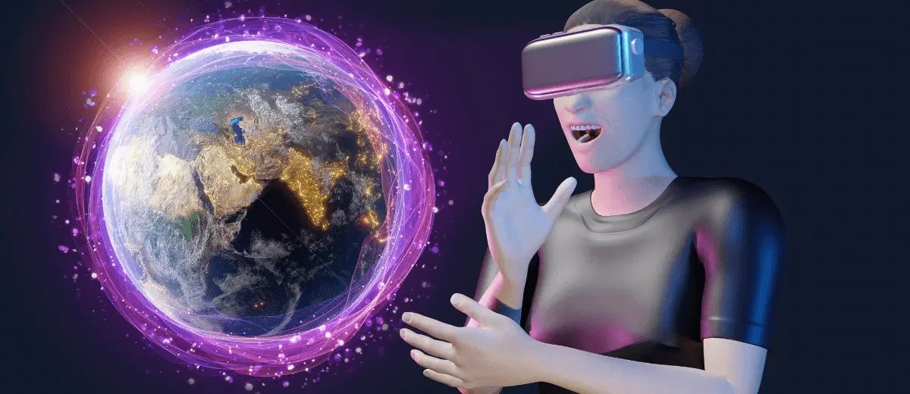

BETTER VERSE
The concept of a virtual universe is fascinating! At its core, a virtual universe refers to a computer-simulated environment that allows users to interact with each other and the digital surroundings in real-time.
Think of it as an expansive, immersive digital world with endless possibilities.
Here are some key aspects:
Key Components of a Virtual Universe:
- Simulated Environment:
The virtual universe can recreate real-world environments or fantasy worlds, often with stunning graphics and intricate details.
- Avatars:
Users navigate the virtual universe through digital representations called avatars, which they can customize to reflect their personality or preferences.
- Interactivity:
Users can interact with the environment and other avatars. This includes social interactions, gameplay, building or creating objects, and even conducting business.
- Persistent World:
The virtual universe continues to exist and evolve even when individual users log off. Events occur in real-time, and the state of the world can change based on user actions.
- Economy:
Many virtual universes have their own economies, with virtual currencies, goods, and services that users can trade, buy, or sell.
- Community:
A strong sense of community is often a central feature, with users forming groups, societies, or guilds to collaborate on various activities.
Applications of Virtual Universes:
- Entertainment:
Providing immersive gaming and social experiences.
- Education:
Virtual classrooms and training simulations.
- Business:
Virtual meetings, conferences, and collaboration spaces.
- Healthcare:
Simulated environments for therapy and rehabilitation.
The virtual universe is a blend of technology, creativity, and human interaction, offering a glimpse into the future of digital experiences.
TIMELAPSE OF THE ENTIRE UNIVERSE
why it is called the timpelapse of entire universe?
The concept of a "timelapse of the entire universe" refers to visualizing the universe's evolution over billions of years in a condensed, sped-up manner.
Just like how a timelapse video captures the gradual changes in a scene over a period of time and presents them in a brief, accelerated format, this term is used to describe simulations or visualizations that depict the history and development of the universe from the Big Bang to the present day.
- VR-Haptics-Enhanced Training:
A new comprehensive literature review highlights the transformative potential of VR-haptics in dental education.
This technology integrates haptic feedback with virtual reality to provide a more immersive training experience.
- Machine Psychology:
Researchers are exploring the potential of psychological learning models combined with AI to create more human-like artificial intelligence.
- Digital Twins of the Earth:
There's ongoing debate about the term "Digital Twin of the Earth," as computer models are always simplified representations of reality.
This concept aims to create highly accurate virtual copies of our planet for research purposes.
- VR in Police Training:
Virtual reality is being considered as a game-changer in police training, especially for handling mental health crises.
VR training provides practical tools that traditional methods lack.
- Prosthetic Hands Controlled by Thought:
Researchers have developed a novel training protocol for brain-computer interfaces, enabling precise control of prosthetic hands using brain signals.
- AI and Quantum Mechanics in Drug Discovery:
A new virtual tool called SmartCADD combines AI, quantum mechanics, and computer-assisted drug design techniques to accelerate the screening of chemical compounds for drug discovery.

THE PLAN FOR FUTURE
Uses of Virtual Universe
- HealthCare
- Education
- Architecture and Urban Design
- Entertainment
- MentalHealth
- Social Interaction
Betterverse that makes the tech world best...!
The metaverse reached the peak of hype and has been left for dead, but make no mistake, the technologies that will power this 3D internet are firing on all cylinders.
In random order, a partial list of other modern-day metaverse enablers includes the following:
- Mark Zuckerberg of Meta.
- Tim Sweeney of Epic Games.
- Jens Bergensten of Minecraft fame.
- Sam Mathews of Fnatic.
- Tim Cook of Apple.
- Jensen Huang of Nvidia.
- Peggy Johnson of Magic Leap.
- Sam Altman of OpenAI.
.png)
PLATFORM REVIEWS
- This platform ViewSonic is designed for education and offers 3D virtual spaces like classrooms and meeting rooms.
It supports customizable avatars, collaborative boards, and various interactive features.
- Formerly metaquest known as Oculus Quest 2, this standalone VR headset is popular for its versatility and user-friendly design
.
- Known for its high-end performance, the Valve Index offers a wide field of view and precise finger tracking.
- This platform Train beyond is geared towards professional training and uses advanced technologies like AI and spatial computing to create realistic virtual environments
- A VR toolkit that turns presentations into VR experiences, Yulio is praised for its ease of use and ability to create professional-quality VR content quickly.
Integrated technologies in Virtual Universe
The technologies that are integrated seamlessly are as follows:
- Virtual Reality (VR)
- Augmented Reality (AR)
- Extended Reality (XR)
- Blockchain
- Artificial Intelligence (AI)
- 3D Modeling and Simulation
- Internet of Things (IoT)

Virtual Universe with specific Locational References
| Country |
State |
Place |
| Empire of Zyria |
Eldoria |
A mystical land with diverse regions including mountains, forests and deserts |
| Neo-Tokyo |
Kanto |
A furistic city space with advanced technology and neon-lit streets |
| Dragon's Peak |
Avaloria |
A towering mountain known for its breathtaking views and hidden treasures |
Note:
- The above mentioned countries are meant to be a showcase how the virtual universe can be creatively designed with detailed locational references.
Conclusion
VR technology is taking part in many aspects of our world, making education, healthcare, and entertainment.
Moreover, it transforms these domains into more engaging, immersive, and accessible experiences.
As there is notable growth in technology, virtual reality will continue to advance.
This technology is becoming pretty common in daily life, and its applications are expanding to various industries and fields.
It can change the way we learn, work, and socialize. We can soon expect even more significant impacts and new applications of VR.
References:
Frequently Asked Questions..!
Feedback